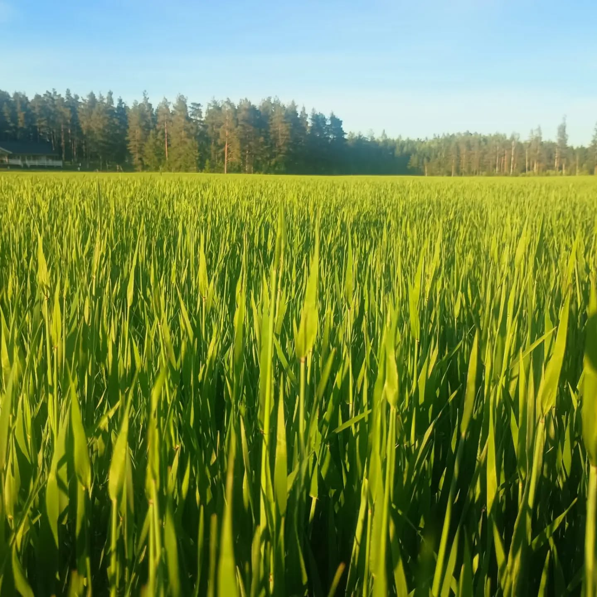
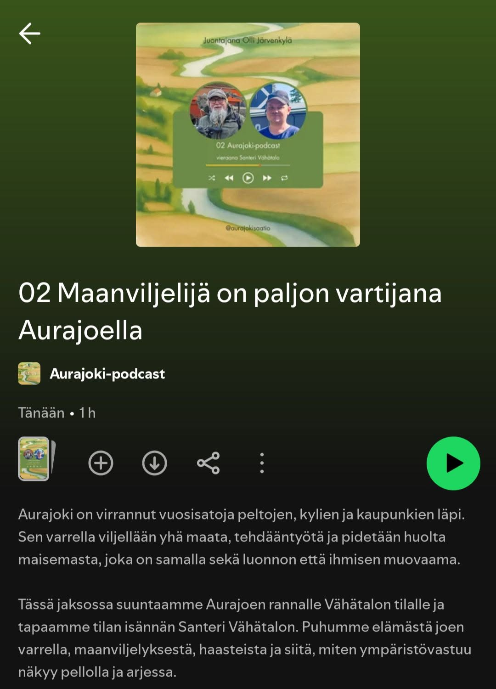
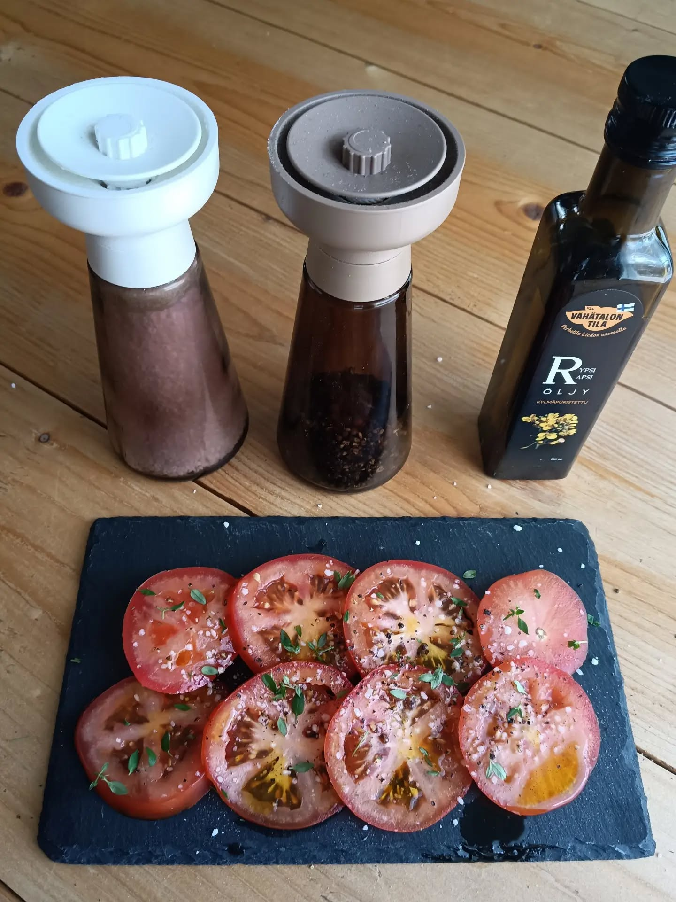
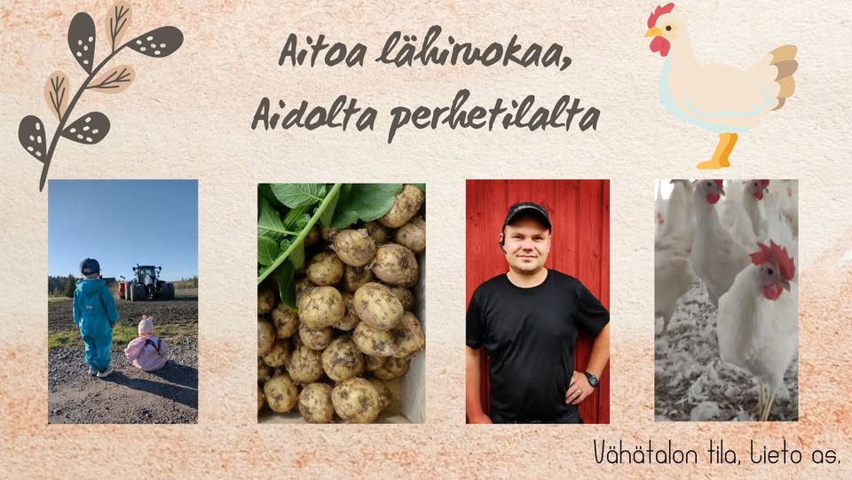

Liedon asema · Varsinais-Suomi
Aitoa lähiruokaa, aidolta perhetilalta
Neljännessä polvessa toimiva perhetila Liedon asemalla. Kasvatamme vapaan kanan munia, viljelemme perunaa ja tankoparsaa, ja myymme kaiken tuoreena omasta tilamyymälästämme Munapuodista.

Tilamme
Elämää Vähätalon tilalla
Perhetilaamme pitää neljännessä sukupolvessa Santeri, täällä Liedon asemalla. Santerin lisäksi tilalla työskentelee päätoimisesti tilan vanhat isännät Jouni ja Jari. Perhetilalla töissä on välillä koko perhe nuorimmasta vanhimpaan, joskus halusta ja toisinaan olosuhteiden pakosta, sillä eläimet ja pellot on hoidettava joka päivä.
- Lattiakanala, jossa kanat elävät ja liikkuvat vapaasti
- Kanojen rehu tehdään tilan omasta viljasta
- Peltoja viljellään kestävästi vuodesta toiseen

Tilamyymälä
Munapuoti palvelee joka päivä
Tilallamme sijaitseva tilamyymälä Munapuoti on avoinna vuoden jokaisena päivänä. Myymälästä saat vapaan kanan munien ja perunan lisäksi muun muassa tilan omasta viljasta myllättyjä jauhoja sekä muita sesongin herkkuja.
Valikoimastamme
Tuoretta suoraan tilalta

Vapaan kanan munat
Munat lattiakanalastamme, jossa kanat liikkuvat vapaasti ja syövät tilan omasta viljasta tehtyä rehua.
Peruna
Omilla pelloillamme kasvatettua perunaa. Suurin osa sadosta päätyy myös lähialueen kauppoihin.
Tankoparsa ja jauhot
Kausiluontoista tankoparsaa sekä tilan omasta viljasta myllättyjä jauhoja Munapuodista.
Arvomme
Miten pidämme tilasta huolta
Eläinten hyvinvointi
Eläinten hyvinvointi on meille kaiken a ja o, joka päivä.
Peltojen kasvukunto
Panostamme monipuoliseen viljelykiertoon, jotta pellot tuottavat satoa vielä vuosienkin päästä.
Perheyritys
Neljännessä sukupolvessa toimiva perhetila, jota pyörittävät Santeri sekä vanhat isännät Jouni ja Jari.
Osa kylän arkea
Talvisin autamme myös paikallisten teiden auraamisessa ja hiekoituksessa, vaikka päätoimemme on maanviljelys.
Kuvia tilalta
Katso millaista arki on Vähätalossa
Tervetuloa Munapuotiin!
Poikkea tilamyymälässä milloin vain, joka päivä klo 7–21.
Yhteystiedot
Tule käymään tai ota yhteyttä
-
Marttilantie 29, 21360 LietoTilamyymälä Munapuoti
-
044 509 0594Soita tai laita viestiä
-
vahatalontila@gmail.comVastaamme mielellämme
-
Vähätalon tila, Lieto asAjankohtaiset kuulumiset Facebookissa